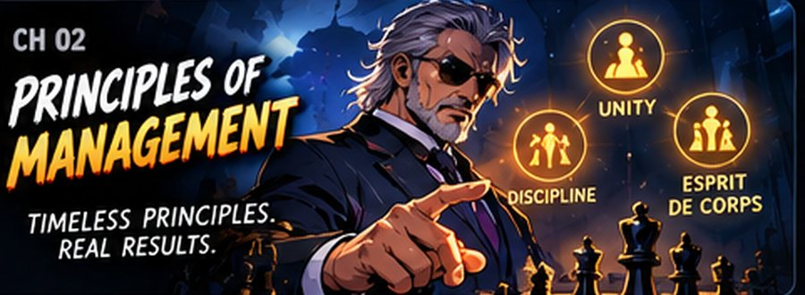
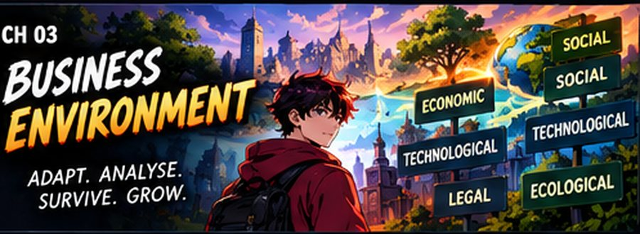
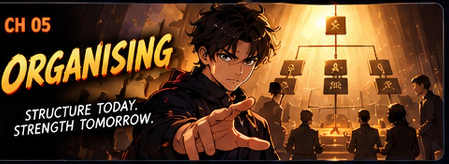

Class 12 Business Studies Notes
Interactive CBSE Class 12 Business Studies notes from Notesflix 101. They follow the CBSE syllabus and NCERT textbook for Class 12. Each chapter is broken into short parts with easy explanations, picture stories, flash cards, quizzes and board-style exam questions with model answers. 2 of 39 parts are free to read with no password. The other parts open with a password from Notesflix 101.
Chapters

Chapter 2: Principles of Management
Fayol's fourteen principles and Taylor's scientific management, on a real shop floor.
- Fayol's Principles — Part 1FREE — The first seven principles, with flashcards, a quiz and case studies. (30 min)
- Fayol's Principles — Part 2PASSWORD — The remaining principles, a flip wall, match-pairs and a case lab. (32 min)
- Taylor's Scientific ManagementPASSWORD — Taylor's principles and techniques, with doodle stories, a 3D concept card and exam traps. (35 min)
- Case Study PracticePASSWORD — Every question type, a timed paper, and how marks are actually awarded. (40 min)

Chapter 3: Business Environment
The forces outside the firm that decide what it can and cannot do.
- Business Environment in 3DPASSWORD — Meaning, features, importance and all five dimensions, with the memory codes. (35 min)
Chapter 4: Planning
Deciding today what the business will do tomorrow — then choosing the right kind of plan.
- Planning in 3DPASSWORD — Features, merits, limitations and the planning process, with the S DIES IF code. (38 min)
- Types of PlansPASSWORD — Objective to budget in Plan Town, a compare lab and a battle arena of games. (36 min)

Chapter 5: Organising
A three-part story: build the team, build the structure, then hand over the power.
- Part 1 — The Organising ArcPASSWORD — Build the team: meaning, the five building blocks and the organising process. (35 min)
- Part 2 — The Structure ArcPASSWORD — Build the system: functional and divisional structure, formal and informal organisation. (38 min)
- Part 3 — The Power ArcPASSWORD — Delegate, empower, succeed: authority, responsibility, accountability and decentralisation. (38 min)
Chapter 6: Staffing
Find the right crew, put them through the filter, then grow and reward them.
- Part 1 — Find the Right CrewPASSWORD — Meaning, importance, features and the recruitment sources. (36 min)
- Part 2 — The Great FilterPASSWORD — Selection step by step: tests, the interview and joining. (38 min)
- Part 3 — Grow, Assess, RewardPASSWORD — Training and development, appraisal, promotion and pay. (36 min)
Chapter 7: Directing
Four parts: take charge, light the spark, lead the way, then get the message through.
- Part 1 — The Captain's CallPASSWORD — Meaning, importance, features and supervision. (36 min)
- Part 2 — The SparkPASSWORD — Motivation, Maslow's hierarchy and financial and non-financial incentives. (38 min)
- Part 3 — The CompassPASSWORD — Leadership: qualities, styles and when each one works. (36 min)
- Part 4 — The SignalPASSWORD — Communication: the process, formal and informal networks, and the barriers. (36 min)
Chapter 8: Controlling
Set the standard, measure the work, correct the gap — and see why planning needs it.
- Part 1 — The Reality CheckPASSWORD — Meaning, importance, features and the planning-controlling link. (40 min)
- Part 2 — The Final ArcPASSWORD — Every step in the process of control, worked through in order. (40 min)
Chapter 9: Financial Management
How much money the business needs, where it comes from and where it goes.
- Money MattersPASSWORD — Business finance, its role and objectives, and the three financial decisions. (30 min)
- Raise It, Share ItPASSWORD — The financing decision and the dividend decision, with their factors. (30 min)
- Plan and BalancePASSWORD — Financial planning, capital structure and trading on equity. (30 min)
- Long and Short MoneyPASSWORD — Fixed capital, working capital and the operating cycle. (32 min)
Chapter 10: Financial Markets
Money market, capital market, the stock exchange and SEBI.
- Where Money MeetsPASSWORD — Financial markets and the money market, its participants and instruments. (32 min)
- The Capital MarketPASSWORD — Capital market, primary and secondary markets, and the stock exchange. (32 min)
- Click, Trade, SettlePASSWORD — Stock exchange trading, demat accounts and settlement, with a trading simulator. (34 min)
- The Market WatchdogPASSWORD — SEBI: why it exists, its objectives and its three functions. (28 min)
- Financial Markets: Revision WalkthroughPASSWORD — The whole chapter in one walkthrough: savings, markets, stock exchange and SEBI. (25 min)
Chapter 11: Marketing Management
One running case — the NOVA smart bottle — carried through all four Ps.
- Chapter Video GuideFREE — Scroll through the whole chapter and watch the video move with you. (8 min)
- Marketing Management PhilosophiesPASSWORD — Production, product, selling, marketing and societal concepts. (25 min)
- Product, Branding, Packaging & LabellingPASSWORD — The four Ps, then everything the product itself carries. (35 min)
- Price MixPASSWORD — Six factors behind a price, with a costing simulation. (25 min)
- Place MixPASSWORD — Channels, transport, warehousing and inventory. (28 min)
- Promotion MixPASSWORD — Advertising, personal selling, sales promotion and public relations. (35 min)
- Quick RevisionPASSWORD — The whole chapter in one fast pass before the exam. (20 min)
- Case Lab — Marketing MastersPASSWORD — 32 cases for 1, 3, 4 and 6 marks, with hints and model answers. (60 min)
Chapter 12: Consumer Protection
Your rights as a buyer, the forums that enforce them, and how a case is actually filed.
- Consumer Protection — Part 1PASSWORD — Consumer rights, responsibilities and who can complain. (24 min)
- Consumer Protection — Part 2PASSWORD — Redressal machinery, consumer forums and how a complaint is filed. (30 min)
- Practice LabPASSWORD — MCQs, 3, 4 and 6-mark labs and case studies, with full-marks structure. (45 min)
Frequently asked questions
Are the Class 12 Business Studies notes free?
2 of 39 parts are free to read with no password. The other parts open with a password from Notesflix 101.
Which syllabus do these Class 12 Business Studies notes follow?
They follow the CBSE syllabus and NCERT textbook for Class 12. Every chapter is split into short interactive parts with simple explanations, flash cards, quizzes and board-style exam questions with model answers.
How many chapters are covered?
11 chapters: Principles of Management; Business Environment; Planning; Organising; Staffing; Directing; Controlling; Financial Management; Financial Markets; Marketing Management; Consumer Protection.
Is there a practice test for Class 12 Business Studies?
Yes. The Class 12 Business Studies Practice Marathon has 283 multiple-choice questions taken from the notes: a weekly marathon (30 questions, 20 minutes, the same set for everyone that week), a 10-question sprint, a 100-question mega marathon and chapter practice. A free sample is open to all; the full bank opens with the subject password.
How do I get the password for locked notes?
Email support@notesflix101.com with your name, class, school and the Gmail ID you sign in with. The same password opens every locked Business Studies note.